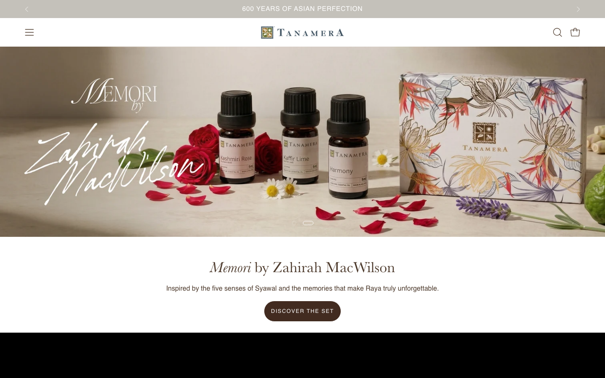
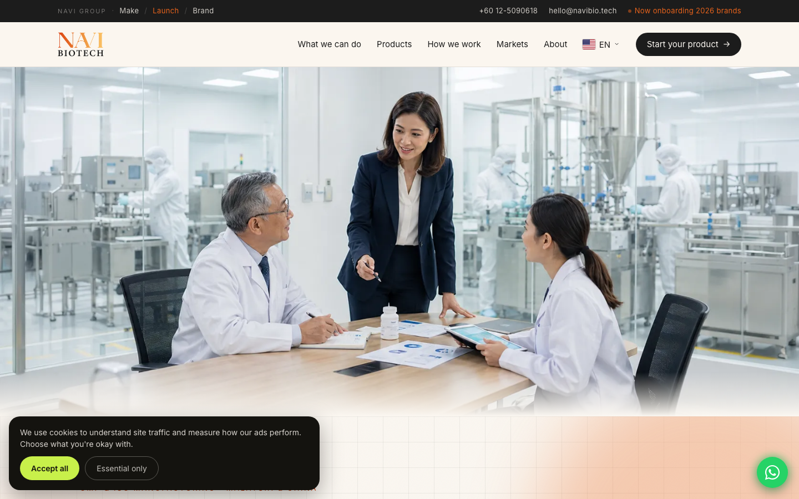
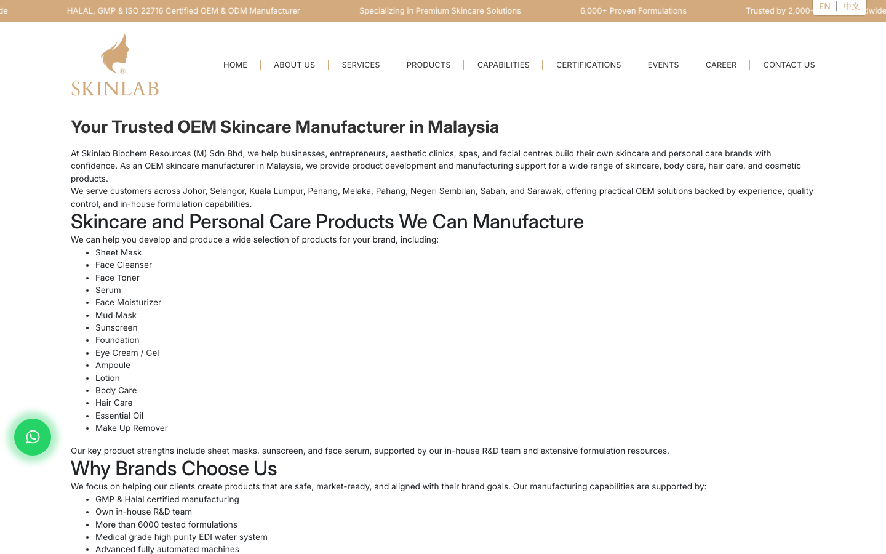
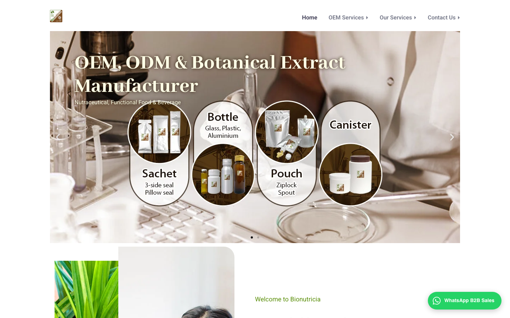
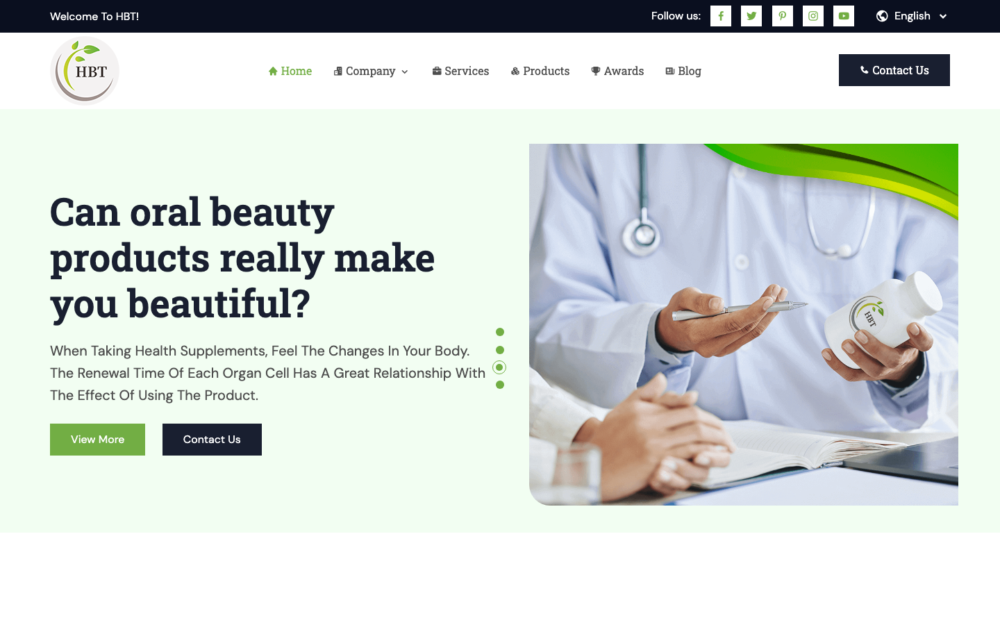
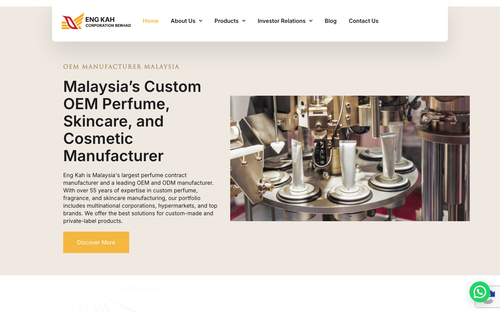
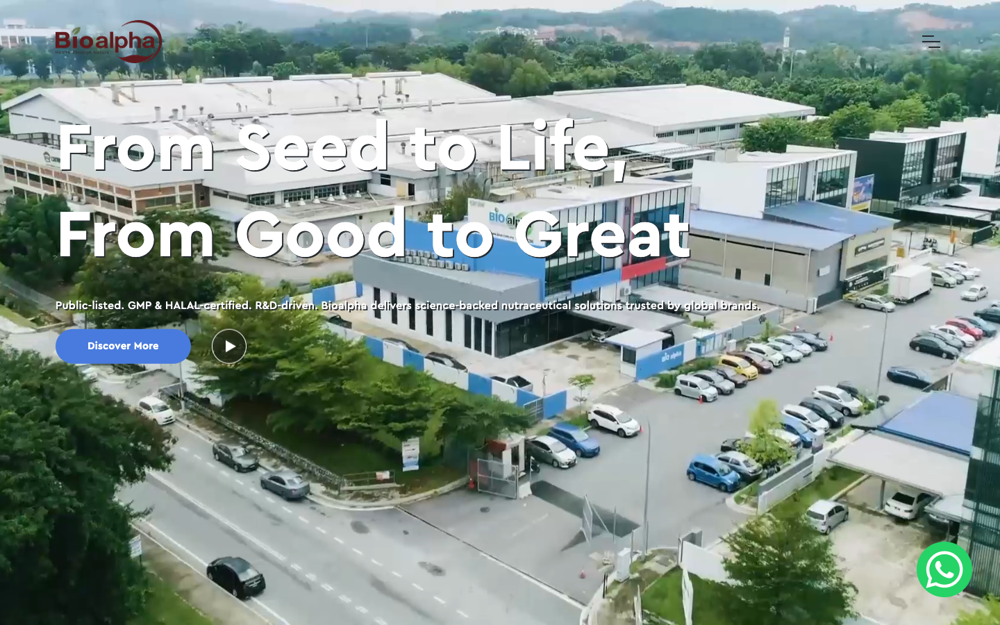

This board reads the six Malaysian OEM and ODM manufacturers a brand owner actually meets while choosing a factory, ranked by how well each website converts that buyer: the B2B founder or established brand Mervyn named on the 14 August call, startups routed to ODM, established brands to OEM. For each rival: who they are, the proof they publish, how they capture the enquiry, where they stay beatable, and the lesson the FA Herbs rebuild takes. Every site was read live on 20 August 2026. Every figure comes from that live read or the 20 August research dossier, and every count is labelled as the rival's own claim where no external source exists.
"Malaysia's Premier Health & Beauty Manufacturer. Innovation at our surface, Science at our core."
That is faherbs.com's own headline, and the page beneath it shows five placeholder certificates and sixteen placeholder client logos. In this category the competition happens in one arena: the research check. A brand owner about to trust a factory with their product opens six manufacturer websites side by side and compares what each one proves and how easy each one is to talk to. There is no impulse purchase, no retail funnel; the site either survives that comparison or the enquiry goes to the rival that does. Four anchors fix how this board is read.
Certificates page: five slots, all placeholder images, zero named certificates. Portfolio: sixteen clients, every logo the identical theme placeholder. "CREAM & JELS" in the nav, and an ISO 9001:2008 claim years after that version was superseded.
The site claims 100+ clients; Sedania's corporate page says 250+. The roster names Amway, Tupperware, Tanamera and Eskayvie. Three factories in Kuala Selangor and Ijok, incorporated 26 October 1994. Both counts are their claims; the conflict is itself a finding.
B2B brand owners, founders, entrepreneurs. Startups go the ODM route: ready formulas, their label, fast to market. Established brands go OEM: their own specification. Lead generation is the engagement's primary objective; the sales team today is one manager, one exec and the GM.
The winners on this board publish numbers: formulations, brands served, MOQ, capacity, idea-to-market time. And they run WhatsApp-first, low-friction capture: pre-filled templates, free formulation consults, refundable sample deposits.
| # | Rival | Lane | Why they rank here | Their headline number | Capture | Site |
|---|---|---|---|---|---|---|
| 1 | NaViBiotech | Supplements + cosmetics, MY + China | Sets the bar. The full answer sheet, MOQ, timeline, capacity, sampling terms, plus the lowest-friction capture on the board. Serves the ODM startup and the OEM brand on the same page | 1,200+ brands | hi | 9 |
| 2 | Skinlab Biochem | Skincare OEM, Johor Bahru | The biggest raw proof after the bar: formulation library and brand count in the hero, WhatsApp one tap away, EN and CN. Hides MOQ, timeline and case studies | 6,000+ formulations | hi | 7 |
| 3 | Bionutricia | Extracts + supplements, wholesale only | The tightest B2B manners: a written reply-time promise, an NDA line, patents shown as certificates. Smaller counts, narrower lane | 239+ brand partners | hi | 7 |
| 4 | HBT Food & Beverage | Supplements + F&B, Melaka | The only active content engine on the board, and a stat strip that shipped with no figures in it. Contact CTAs everywhere, all funnelling to phone and email | counters empty | mid | 5 |
| 5 | Eng Kah Corporation | Cosmetics + perfume OEM/ODM | The deepest substance, 55+ years and eight certifications, funnelled into a single email address. No WhatsApp, placeholder graphics live on read day | 55+ years | bad | 4 |
| 6 | Bioalpha | Nutraceutical OEM/ODM/OBM, listed | Status without proof: not one figure on the homepage, one soft CTA aimed at the About page. The closest mirror of FA Herbs' own failure | no numbers published | lo | 3 |
The exhibit first, because it settles the question this whole board turns on: can FA Herbs' output be marketed world class? It already is, by the brand the factory itself builds. Then the six rivals.







Figures are quoted from each rival's own published pages, read live on 20 August 2026, and labelled as their claims. Site scores and capture reads are Brand Method's judgement of conversion craft against the defined buyer, not published data. Where something could not be evidenced it is marked as not verified, or as our inference, rather than stated as fact.
The one estate that publishes the full answer sheet and captures with the least friction. The rebuild's checklist in a single homepage.
MOQ, timeline, capacity, refundable sampling, pre-filled WhatsApp. Match the sheet, then beat it with named clients.
Big claims and easy contact. Each one still leaves a gap the rebuild can occupy.
6,000+ formulations in the hero, EN and CN, WhatsApp one tap away. Hides MOQ and case studies; skincare only.
Reply promise in writing, NDA line, patents as certificates. Steal the manners; the counts are beatable.
Real credentials, unconverted. The cautionary half of the board, and FA Herbs' current company.
The only active blog on the board, and stat counters that shipped empty. Copy the content, avoid the frame-without-proof.
Eight certifications funnelled into one email address. Substance does not convert unpublished and unreachable.
Listed, certified, numberless. The control group: status alone converts nothing.
The proof of capability sits inside the house.
Marketed world class at tanameraofficial.com, shipping to 30+ countries, award marks on show. Today the brand outshines its own manufacturer online.
| Rival | What they publish that FA Herbs does not | Where they stay beatable | What the rebuild takes |
|---|---|---|---|
| NaViBiotech | The full answer sheet: 1,200+ brands, MOQ from 100 boxes, ~3 months, 500m+ units, RM250 refundable sampling | All self-claims, no named clients in our read | The same sheet per line, plus named clients |
| Skinlab Biochem | 6,000+ formulations and 2,000+ brands in the hero, EN and CN | MOQ, timeline and case studies absent; skincare only | A real library count, 10-line breadth |
| Bionutricia | 239+ partners, patents as certificates, a written reply promise, an NDA line | Narrow extract lane, modest counts, no MOQ in our read | The manners: reply promise, NDA, real certificates |
| HBT | An active buyer-education blog, posts dated Aug 2026 | Empty stat counters, no WhatsApp or form in our read | The blog plan, never frames before proof |
| Eng Kah | 55+ years and 8 current certifications, ISO 9001:2015 included | Email-only capture, placeholder graphics, zero operational numbers | A current ISO claim, proof with a path |
| Bioalpha | Listed status and an R&D posture | No numbers on the page, one CTA aimed at About | The warning: status alone converts nothing |
faherbs.com says 100+ clients, Sedania's corporate page says 250+. Both are self-claims and the conflict is a finding. Settle the number that survives verification, then state it in the hero's first sentence the way NaViBiotech states 1,200+: loudly, specifically, everywhere the same.
Amway, Tupperware, Tanamera, Eskayvie. In our read of all six rivals, none publishes client names of that weight; every rival counts brands, none shows them. One permissioned logo row beats every counter on this board, and Eskayvie is a live Brand Method client, so that permission conversation is one call away.
MOQ, capacity, idea-to-market time and sampling terms, published per product line, and split the way the buyer splits: an ODM lane for startups, ready formulas, their label, fast, and an OEM lane for established brands with their own specification. NaViBiotech proves the format converts; nobody else on the board completes it.
A product-type dropdown, a pre-filled brief, a written reply-time promise, a free formulation consult, and a refundable sample deposit that filters tyre kickers politely. The mechanics are proven twice on this board, NaViBiotech and Bionutricia. faherbs.com's current "I'm interested" button carries no context at all.
Five placeholder slots on a GMP factory's certificates page is the worst page in the category, per the 00 audit. Publish the actual GMP, JAKIM and MAL evidence with numbers, correct the ISO 9001:2008 claim to whatever is current and true, and delete every placeholder. HBT's empty counters and Eng Kah's placeholder badges show how visibly a frame without proof fails.